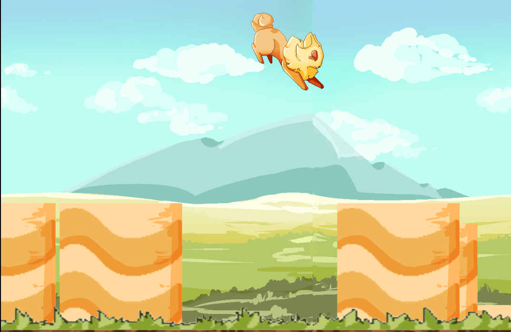

This first project is a side-scroller game I made with a few other students at Tech.
Please note that the art is another student's, not mine!

A few classes have asked that students do not post code online, so contact me if you are interested in seeing some of my code.
Between schoolwork and personal projects, I am constantly coding something new,
so contact me if you want to see more!